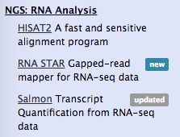

Advanced customisation of a Galaxy instance
Contributors
Setup
We are going to use a prebuilt virtual machine image for this session.
From the given USB stick, please:
- Copy and install VirtualBox (or download) if you do not have it already.
- Copy the Planemo machine image - file
latest.ovaor download.
Galaxy’s frontend
JavaScript sources and CSS sources are in the $GALAXY_ROOT/client folder.
Whenever you make changes there, you will need to re-build Galaxy’s frontend with:
$ cd $GALAXY_ROOT
$ make client
This requires Node.
Translation and localisation 1/2
The language for labels used in the JS source code is English, but can be wrapped in l() which makes it translatable.
_l( 'Help' )
–
- There is a script client/galaxy/scripts/nls/locale.js that defines all translatable labels. By default without a translation.
"Analyze Data" :
false,
–
- There is a folder client/galaxy/scripts/nls/ that contains all available localisations.
"Analyze Data" : "Analyse de données",
Translation and localisation 2/2
When a user’s browser locale or language is set to a known translation, it will be used instead of the default. If a translation is not available for a string, it will appear in English.
How to modify the menu
Open the client/galaxy/scripts/layout/menu.js
var helpTab = {
id : 'help',
title : _l('Help'),
tooltip : _l('Support, contact, and community'),
menu : [{
title : _l('Support'),
url : options.support_url,
target : '_blank'
},{
title : _l('Search'),
url : options.search_url,
target : '_blank'
Configuration tweaks
Plenty of customisation can be achieved using settings in the main configuration file galaxy.yml
Tool Panel configuration
- How the tool panel looks like is decided in a file called
integrated_tool_panel.xml. - By default it resides in Galaxy’s root folder.
- If missing it is generated from all other tool config files during startup.
- Modify it if you want to reorder tools or move sections.
Tool panel labels
You can add <tool labels="updated" /> to achieve:

Tool Panel search configuration 1/2
The tool panel search uses a pre-built index that is compiled during Galaxy
boot. You can tweak tool panel search by configuring boosts in galaxy.yml.
tool_name_boost: 9
tool_section_boost: 3
tool_description_boost: 2
tool_label_boost: 1
tool_stub_boost: 5
tool_help_boost: 0.5
You can also manipulate the number of tools returned for any query by changing
the tool_search_limit. This will display more or fewer tools for any given
query.
Tool Panel search configuration 2/2
# Enable/ disable Ngram-search for tools. It makes tool
# search results tolerant for spelling mistakes in the query
# by dividing the query into multiple ngrams and search for
# each ngram
tool_enable_ngram_search: true
# Set minimum and maximum sizes of ngrams
tool_ngram_minsize: 3
tool_ngram_maxsize: 5
Log level configuration
# Verbosity of console log messages.
log_level: DEBUG
These are python logging levels.
Help menu
# The URL linked by the "Wiki" link in the "Help" menu.
wiki_url: https://galaxyproject.org/
# The URL linked by the "Support" link in the "Help" menu.
support_url: https://galaxyproject.org/support
# The URL linked by the "How to Cite Galaxy" link in the "Help" menu.
#citation_url: https://galaxyproject.org/citing-galaxy
# The URL linked by the "Search" link in the "Help" menu.
#search_url: https://galaxyproject.org/search/
# The URL linked by the "Mailing Lists" link in the "Help" menu.
#mailing_lists_url: https://galaxyproject.org/mailing-lists
# The URL linked by the "Videos" link in the "Help" menu.
#screencasts_url: https://vimeo.com/galaxyproject
# The URL linked by the "Terms and Conditions" link in the "Help" menu, as well
# as on the user registration and login forms and in the activation emails.
#terms_url: None
Brand and welcome
# Append "/{brand}" to the "Galaxy" text in the masthead.
brand: GenOuest

# The URL linked by the "Galaxy/brand" text.
logo_url: /
# The URL of the page to display in Galaxy's middle pane when loaded. This can
# be an absolute or relative URL.
welcome_url: /static/welcome.html
Email configuration
error_email_to: marten+error@bx.psu.edu
activation_email: marten+activation@bx.psu.edu
blacklist_file: config/disposable_email_blacklist.conf
registration_warning_message: Please only register one account
user_activation_on: False
activation_grace_period: 6
Galaxy Tours
Have their own tutorial.
Galaxy Webhooks
Have their own slides and tutorial.
And also a documentation
Adjusting styles
We use SCSS to build our CSS. Among other features it allows defining variables.
--- a/client/galaxy/style/scss/theme/blue.scss
+++ b/client/galaxy/style/scss/theme/blue.scss
@@ -2,7 +2,7 @@
-@base-color-1: #2c3143;
+@base-color-1: blue;
Dynamic Welcome Page
- Customizing the welcome page is quite easy, just edit
$GALAXY_ROOT/static/welcome.html
–
- Embedding twitter feeds is popular, e.g. usegalaxy.org
–
- IFrame to embed a blog hosted on the same domain ```html
News
---
## Toolbox filtering
– ToolBox filtering
Modules from lib/galaxy/tools/toolbox/filters/ can be specified in
the following lines. tool_* filters will be applied for all users
and can not be changed by them. user_tool_* filters will be shown
under user preferences and can be toggled on and off at
runtime. Example shown below are not real defaults (no custom
filters are applied by default), but can be enabled by renaming the
examples.py.sample in the filters directory to examples.py.
#tool_filters = #tool_label_filters = #tool_section_filters = #user_tool_filters: examples:restrict_upload_to_admins, examples:restrict_encode #user_tool_section_filters: examples:restrict_text #user_tool_label_filters: examples:restrict_upload_to_admins, examples:restrict_encode
The base modules that are searched for modules as described above
can be modified and modules external to Galaxy can be searched by
modifying the following option.
#toolbox_filter_base_modules: galaxy.tools.toolbox.filters,galaxy.tools.filters ```
Quotas
Used to control user disk usage.
To turn on the use of quotas: In galaxy.yml:
enable_quotasEnable enforcement of quotas. Quotas can be set from the Admin interface (under Data).- must create quotas in admin interface before any quota will be enforced, otherwise ‘unlimited’
Amounts:
- Examples: “10000MB”, “99 gb”, “0.2T”, “unlimited”
- = / + / -
Default for user class:
- None (No)
- Unregistered Users
- Registered Users
or associated with Groups or Users
Exercise: Creating Quotas
- Create quotas for Unregistered (1b) and Registered Users (1mb)
- Create a quota that adds 1GB
- Create a quota that decreases by 1GB
- Create a quota that grants unlimited
Thank you!
This material is the result of a collaborative work. Thanks to the Galaxy Training Network and all the contributors! Tutorial Content is licensed under
Creative Commons Attribution 4.0 International License.
Tutorial Content is licensed under
Creative Commons Attribution 4.0 International License.